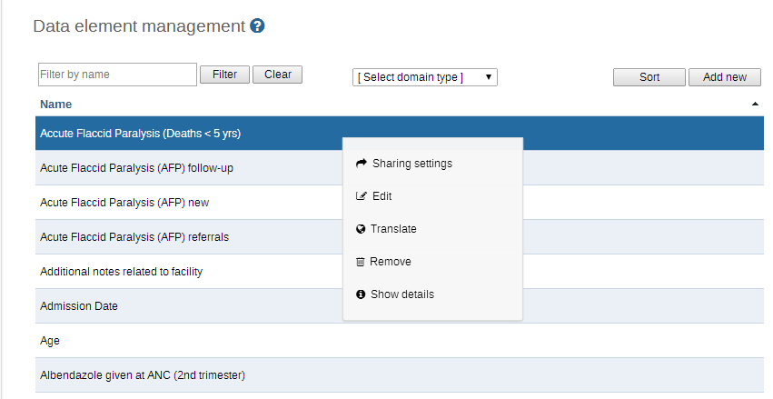
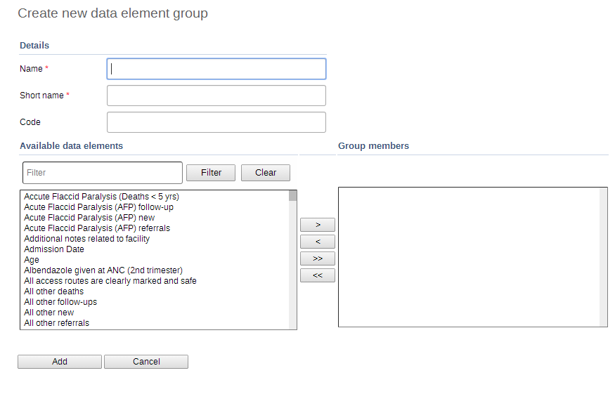
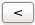
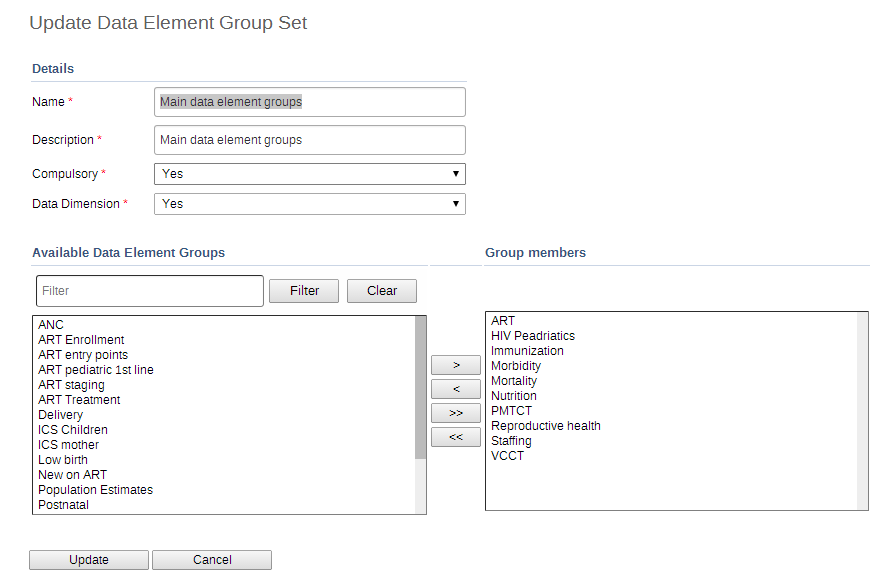
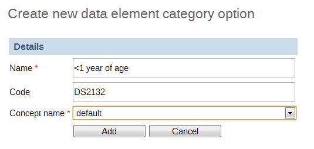
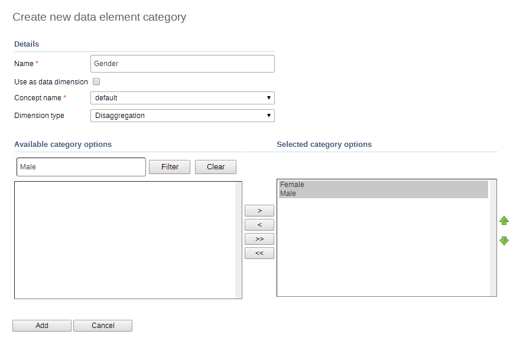
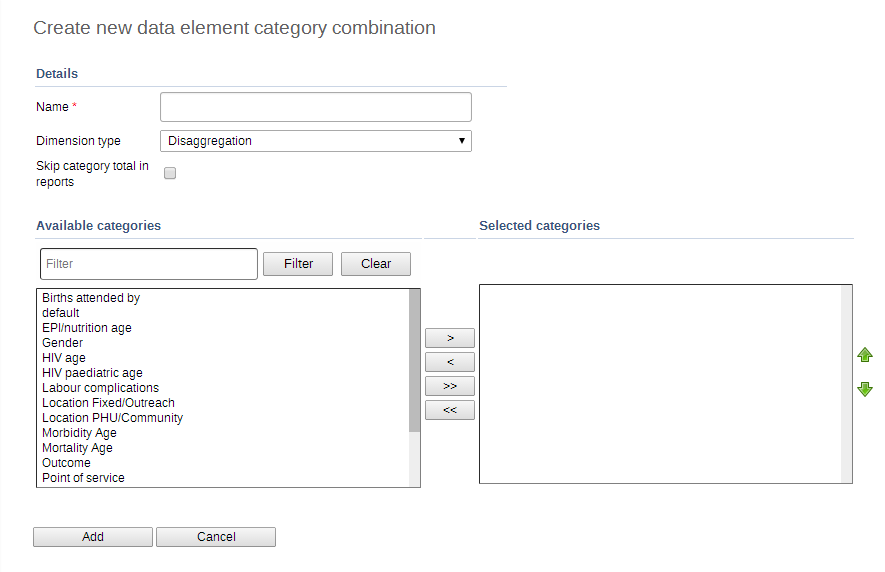
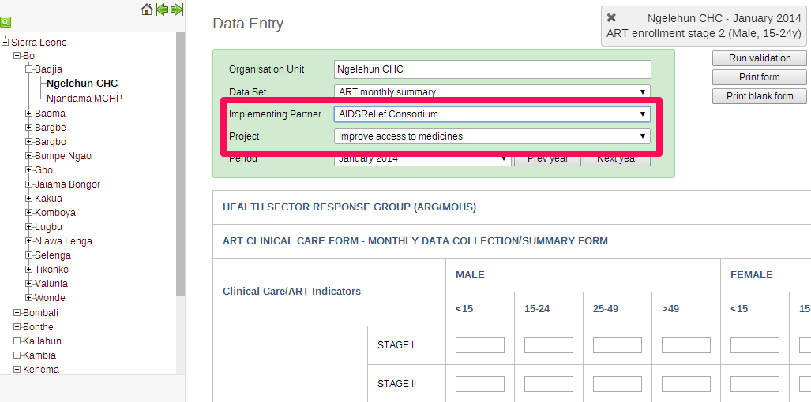
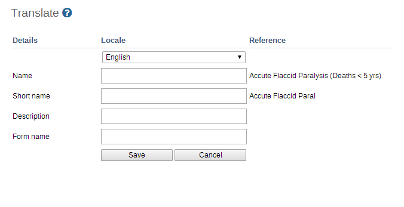

Table of Contents
When the ‘Data Elements and Indicators’ options is chosen from the main Maintenance menu, the following screen appears:
 |
From the left side menu or by clicking on the sections listed in the central area you can access the various sections on data elements and indicators.
Each of the options for maintenance of data elements will be described in the following section.
-
Data element
Create, modify, view and delete data elements.
-
Data element group
Create, modify, view and delete data element groups.
-
Data element group editor
Easily add or remove data elements to and from data element groups.
-
Data element group set editor
Create, modify, view and delete data elements group sets.
-
Data element category options, categories and category combinations
Create, modify, view and delete data element categories.
Data elements form the basis of DHIS2. Data elements define what is actually recorded in system, e.g. number of immunisations or number of cases of malaria. The actual creation and definition of the data elements themselves are far beyond the scope of this manual to describe, but it is assumed that an administrator will be provided with a list of standardised data elements for inclusion into the DHIS2 system.
To access the data element maintenance module, choose Maintenance -> Data elements and Indicators -> Data element.
The 'Filter by name' will allow you to filter a range of data elements if you know either the full name of the data element, or just a part of it. Type the name into the search field and any matching data elements are displayed below. The 'Sort' button can be used to sort the data elements into alphabetical order.
|  |
To add a new data element, click the 'Add new' button. There are various options available from this page that allow the user to modify data elements already present in the database. Each of the options are described below in the "Editing data elements".
To edit an existing data element, click the name of data element you wish to modify, and then select "Edit" from the context menu which will appear.
-
Name: Define the precise name of the data element in this field. Each data element must have a unique name.
-
Short name: Typically, an abbreviation of the full data element name. This attribute is often used in reports to display the name of the data element, where there is limited space available.
-
Code: In many countries, data elements are assigned a code. This code can be entered in this field.
-
Description: Allows a full textual description of the data element to be entered. The user should be as precise as possible, and include full information on how the data element is measured and what its meaning is.
-
Active: Defines whether a given data element is active or not. Data elements marked as inactive, will not be displayed in the data entry screens.
-
Domain type: Defines whether a data element is an aggregate or patient type of data element.
-
Value type: Defines the type of data this data element will be used to record. Currently there are five options:
-
Number: Numeric values.
-
Text: Textual values.
-
Yes/No: Boolean values, will render as drop-down lists in data entry.
-
Yes only: True values, will render as check-boxes in data entry.
-
Date: Dates, will render as calendar widget in data entry.
-
-
Number type: DHIS 2 supports several different number types. During data entry, users will be restricted to enter the defined number types only. Each of the available options are described below.
-
Number: This number type supports any real value with a single decimal point, an optional negative sign, and no thousands separators.
-
Integer: Any whole number (positive and negative), including zero.
-
Positive integer: Any whole number greater than (but not including) zero.
-
Negative integer: Any whole number less than (but not including) zero.
-
Positive or zero integer: Any whole number greater than or equal to zero.
-
Unit interval: Continuous number between 0 and 1.
-
Percentage: Whole number inclusive between 0 and 100.
-
-
Text type: The detailed type relevant to text value type.
-
Text: Free text, rendered as standard input field.
-
Long text: Free text, rendered as text area in data entry.
-
-
Aggregation operator: Defines the default aggregation operation that will be used on this data element. Most data elements should have the "SUM" option set. This includes all data elements which should be added together. Other data elements, such as staffing levels, should be set to use the "AVERAGE" operator, when values along the time dimension should not be added together, but rather averaged. The complete list of aggregation operators:
-
Sum: Sum of data values in the period and organisation unit dimension
-
Average: Average of data values in the period dimension, sum in the organisation unit dimensions.
-
Count: Count of data values.
-
Std dev: Standard deviation (population-based) of data values.
-
Variance: Variance (population-based) of data values.
-
Min: Minimum of data values.
-
Max: Maximum of data values.
-
-
Store Zero Data Value: By default, DHIS2 will not store zeros which are entered in the data entry module. If zeros need to be saved for a particular reason, this option can be set to "Yes".
-
URL: A URL having an in-depth description of the data element can be entered in the ‘URL’ field. This could be for instance, a link to a metadata repository or registry that contains detailed technical information about the definition and measurement of the data element.
-
Combination of categories: Defines which category combination the data element should have.
-
Aggregation levels: The Aggregation Levels option allows the data element to be aggregated at one or more levels. When the user clicks on the Aggregation levels option, a drop down menu appears which displays available aggregation levels. The desired aggregation level is then selected by clicking the ‘Add Selected’ button. By default, the aggregation will start at the lowest assigned organisation unit. If e.g. Chiefdom is selected below it means that Chiefdom, District, and National aggregates will use Chiefdom (the highest aggregation level available) as the data source, and PHU data will not be included. PHU data will still be available for the PHU level, but not included in aggregations to the levels above. If District and Chiefdom are both selected then the District and National level aggregates will use District data as their source, Chiefdom will use Chiefdom, and PHU will use PHU. Read more about aggregation levels in the Reporting chapter i the section on data sources for reporting.
-
Option set for data values: Option sets are predefined lists of options which can be used in data entry.
-
Option set for comments: Option sets for comments are predefined list of options which can be used to specify standardized comments for data values in data entry.
-
Legend set: Legend sets can be used in the GIS module to display certain data elements with certain icons. Refer to the GIS module documentation for more information on legend sets.
-
Attributes: Data element attributes (if they have been defined) can be defined. In this example, "Rationale" and "Unit of measure" are both data element attributes.
-
Data element group sets: If data element group sets have been defined, each will appear in the "Data element groups" section. Select each data element group from the list of group sets provided.
After making all the required changes, click ‘Save’. The ‘Cancel’ button aborts all changes made.
In order to delete a data element, click the name of the data element you wish to delete, and then select "Remove" from the context menu. Note that this operation is only possible if there is no data attached to the data element itself. The user will be prompted to ensure that the data element should be deleted.
Data element groups provide a mechanism for classifying related data elements into a common theme. For instance, two data elements "Measles immunisation" and "BCG Immunisation" might be grouped together into a data element group "Childhood immunisation". To access the data element group maintenance page, click Maintenance -> Data elements and Indicators -> Data Element Group.
Similar to the "Data element" maintenance page, data elements groups can be searched with by entering a search string in the "Filter by name" field.
To add a new data element group, click the button and the following screen will be displayed:
|  |
Fill in the "Name" field and then select all data elements that should belong to the group from the left panel. Click the "Move selected"  button to add the selected data elements to the data element group. Click the "Remove selected" button to remove all data elements from the group that have been selected in the right panel. Finally, click the "Add" button to save changes, or the "Cancel" button to discard any changes.
button to add the selected data elements to the data element group. Click the "Remove selected" button to remove all data elements from the group that have been selected in the right panel. Finally, click the "Add" button to save changes, or the "Cancel" button to discard any changes.
The data element group editor provides advanced functionality to the administrator to allow multiple data elements to be added or removed from a group. It is also possible to create new data element groups, rename existing groups, and delete groups entirely. To access the data element group editor, go to . The following screen will appear.
Data element groups area listed alphabetically in the leftmost panel. By clicking on a data element group, the current members of that group (data elements) are listed in the centre panel. Available data elements that can be added to the data element group appear are listed alphabetically in the rightmost panel. To remove an existing data element from the group, click the name of the data element in the centre panel, and then press the "Move right" button. To add data elements to the group, select them from the leftmost panel, and click the "Move left"  button. Press the button to save your changes.
Data element group sets allow multiple data element groups to be categorised into a set. Data element group sets are used during analysis and reporting to combine similar data element groups into a common theme. To access the data element group set maintenance module, choose "Maintenance -> Data elements and Indicators -> Data Element Group Set". Similar to the other data element maintenance modules, new data element group sets can be added by pressing the "Add new button". Other operations include Edit, Translate, Delete and Information, similar to data elements and data element groups as described in the previous sections.
Existing data element group set members can be edited by clicking the name and selecting "Edit" from the context menu of the desired data element group set as seen below.
|  |
Available data element groups are displayed in the left panel. They can be moved into the selected data element group set by pressing the "Move right" button. Data element groups that are currently members of the data element group set are displayed in the right hand panel. They can be removed from the data element group set by clicking the desired data element group and pressing the "Move left" button. The ordering of the data element groups can be set with the "Move Up"  and "Move Down" arrows. This ordering will be used in the datamart and reports to order the data element groups. Press the button to save any changes and the button to discard all changes.
and "Move Down" arrows. This ordering will be used in the datamart and reports to order the data element groups. Press the button to save any changes and the button to discard all changes.
Categories can be used to disaggregate data elements into individual atomic components. They can also be used to assign attributes to all data recorded in a specific dataset, such as "Implementing partner" and "Funding agency."
Data element categories are typically a concept, such as Gender, Age or Disease Status. Data elements such as "Number of cases of confirmed malaria" are often broken into smaller component parts to determine, for instance, the number of confirmed malaria cases of particular age groups. As an example, three data element categories: Under 1, 1-5 and Over 5 could be created. They could be assigned as categories to the data element, which would then create in the data entry screens, three separate fields for this data element namely:
-
Number of confirmed malaria cases (Under 1)
-
Number of confirmed malaria cases (1-5)
-
Number of confirmed malaria cases (Over 5)
Effective use of data element categories greatly simplifies the process of setting up the DHIS2 system, as the data element categories can be reused to disaggregate many different data elements. Otherwise, each of the data elements listed above, would need to be created separately. Judicious use of data element categories will greatly simplify the DHIS2 implementation, and allow for subsequent advanced analysis.
Where possible, category options should be recycled. For instance, there might be two categories which might share a particular category option (e.g. <1 year of age). When creating the categories, this category option could be reused. This is important if particular category options (or category option combinations) need to be analyzed together.
-
All possible category options should be defined.
-
Categories should be composed of multiple category options created in Step 1.
-
Category combinations should be composed of either one, or multiple categories.
-
Data elements should be created and assigned a particular category combination.
A category option consists of a name, along with an optional code, and a concept.
Categories can be added by accessing the "Data Element Category Option" dialog. (Maintenance -> Data Elements and Indicators->Data Element Category Options" as seen below. The category option must consist of a name, an optional code, and a concept.
|  |
Once all category options have been defined for a particular category, the category can be defined with the "Data Element Category" dialog.(Maintenance -> Data Elements and Indicators->Data Element Category). Enter the name of the data element category and press "Save". Once you have defined the name of the category, you can assign category options to it by selecting the category which you have just defined, clicking its name, and then selecting "Edit" from the context menu as seen below.
|  |
Type the name of the new data element category in the "Name" field in the "Details" region and assign a concept to the category. Category options can be added by moving category options from the left-side pane (Available category options) into the right-side pane(Selected category options). Category options can be reordered using the "Move Up" and "Move Down" buttons. . Once all data element categories options have been added to the data element category, press the button to save all changes or the button to discard any changes.
A category can have two types "Disaggregation" or "Attribute". For disaggregation of data elements, you should select "Disaggregation". A dimension type of "Attribute" will allow the category to be used to assign a combination of categories to data recorded through a dataset.
If the "Use as data dimension" box is ticked, the category will be available to the analytics as another dimension, in addition to the standard dimensions of "Period" and "Organisation unit".
Category combinations allow multiple categories to be combined into a related set. As an example, a data element "Number of new HIV infections" might be disaggregated according to the following categories.
-
Age: "Under 5", "5-15", "15-24", "24 and above"
-
Gender: Male, Female
In this example, there would be two levels of disaggregation, consisting of two separate data element categories, each consisting of several data element category options. In most HMIS systems, different data elements are disaggregated according to a common set of categories. By combining these different categories into a category combination and assigning these combinations to data elements, the appropriate disaggregation levels can be applied efficiently and quickly to a large number of data elements.
To access the category combination maintenance module, select "Maintenance->Data element and indicators->Data element category combinations" from the main DHIS2 menu. As with the other maintains modules, you can filter the listed category combinations by entering the name (or portion thereof) of the category combination. Other operations such as "Edit", "Delete" and "Information" should be familiar to the reader.
To add a new category combination, click the "Add new" button. The following dialogue will be displayed.
|  |
Type the name of the category combination in the "Name" field, and then select the desired categories from the left panel. Press the "Move right" button to add the selected categories to the category combination. Press "Move left" to remove any categories that should not be part of the category combination.
Categories can only be added to a category combination at this step. Categories can be removed from category combinations later by editing the category combination, however, it is not allowed to add additional categories once the combination has been created. Ensure that the category combination and its respective categories is final before you create the category combination and assign it to a data element.
In some deployments of DHIS2, information on attributes such as "Implementing partner" and "Project" are important to record as an attribute of each data value. To provide an example, let us suppose that an NGO is providing ART services in a given facility. They would need to report each month on the "ART monthly summary", which would be reported monthly and contain a number of data elements. The NGO and project could potentially change over time. In order to be able to effectively attribute data to a given NGO and project at any point in time, this information would need to be recorded along with each data value at the time of data entry.
When categories and category combinations have a type of "Attribute", they can serve as a means of applying a common set of attributes (e.g. Implementing partner and project) to a related set of data values contained in a dataset. Let us suppose we create two categories called "Implementing partner" and "Projects". Each of these categories would be created with a dimension type of "Attribute." Finally, a category combination called "Implementing partners and projects" would be created with these two categories and assigned a dimension type of "Attribute". Finally, we can use this dimension to apply an attribute to the dataset "ART monthly summary", by choosing the "Implementing partners and projects" as the "Combination of categories".
The following screen shot of an example data entry screen illustrates all of these concepts.
|  |
Note that when data is entered, an "Implementing partner" and "Project" can be selected. Each data value recorded in this data entry screen, would be assigned a specific combination of these categories as an attribute. These attributes (when specified as a dimension) can be used in the analysis modules similar to other dimensions, such as the period and orgunit. In summary, when category combinations are used as attribute, they effectively serve as another dimension (similar to "Period" and "Organisationion unit") which can be used for analysis.
Category options can be groups and classified using category option groups. Category option groups can be created from "Category option group" > "Add new", and contains a set of category options.
Category option groups can be included in category option group sets. Category option group sets can be created from "Category option group set" > "Add new", and contains a set of category option groups.
The main purpose of the these entities is to be able to add more dimensionality to your captured data for analysis in apps such as pivot table and data visualizer. An example of where this becomes useful: In a system, data is collected by "projects", where projects is modeled as category options. The system is required to do data analysis according to which donor supports the project. In this case, a category option group set called "Donor" can be created. Each donor can be created as a category option group, where each category option / project is put in the appropriate group. In data analysis apps, the "Donor" group set will appear as a data dimension, while each donor appear as dimension items, ready for inclusion in reports.
DHIS 2 provides functionality for translations of database content like data elements, data element groups, indicators, indicator groups, validation rules and more. These elements can be translated to any number of locales. A locale represents a specific geographical, political, or cultural region.
To add a translation click the Translate icon next to the element you would like to translate. Start by selecting the desired locale from the Locale select box. In the Translate screen, select your locale and enter values for the available element properties. The reference property values are shown on the right. These values are the values which have been entered in the regular add or update user interface for the current object.
Translations can be enabled by selecting the desired locale under Database Language under User General Settings in the Settings module.
DHIS2 provides functionality to translate existing data elements into other languages. Click the name of the data element you wish to translate, and select "Translate" from the context menu which will appear.. The following dialogue will be displayed.
|  |
The reference language is displayed in the upper right portion of the dialogue. Choose a locale to translate the data element into by selecting an option from the locale drop-down menu. Specify the name, short-name, description and form name in the target language. Press "Save" to save your changes.